Android从入门到入土
一、简单控件
1.文本显示
1.1 设置文本内容
设置文本内容有两种方式：
- 在 XML 文件中通过属性 android:text 设置文本
- 在 Java 代码中调用文本视图对象的 setText 方法设置文本
引用字符串资源：
- 在XML文件中引用（@string/xxx）
- 在Java代码中引用（R.string.xxx）
设置文本的大小
-
在Java代码中调用setTextSize方法，即可指定文本大小。
-
在XML文件中则通过属性android:textSize指定文本大小,此时需要指定字号单位。
-
px：它是手机屏幕的最小显示单位，与设备的显示屏有关。
-
dp：它是与设备无关的显示单位，只与屏幕的尺寸有关。
-
sp：它专门用来设置字体大小，在系统设置中可以调整字体大小(推荐用)。
1.2 设置文本的颜色
- 在Java代码中调用setTextColor方法即可设置文本颜色,具体色值可从Color类取。
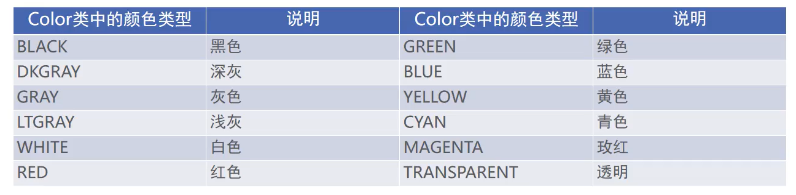
2.视图
2.1设置视图的宽高
-
视图宽度通过属性android:layout_width表达，视图高度通过属性android:layout_height表达，宽高的取值主要有下列三种:
-
match_parent：表示与上级视图保持一致。
-
wrap_content：表示与内容自适应。
-
以dp为单位的具体尺寸。
-
在代码中设置视图宽高
首先确保XML中的宽高属性值为wrap_content,接着打开该页面对应的Java代码,依序执行以下三个步骤：
- 调用控件对象的getLayoutParams方法，获取该控件的布局参数。
- 布局参数的width属性表示宽度, height属性表示高度,修改这两个属性值。
- 调用控件对象的setLayoutParams方法,填入修改后的布局参数使之生效。
2.2 设置视图的间距
设置视图的间距有两种方式：
- 采用layout_margin属性，它指定了当前视图与周围平级视图之间的距离。包括layout_margin、layout_marginLeft、 layout_marginTop、 layout_marginRight、 layout_marginBottom
- 采用padding属性，它指定了当前视图与内部下级视图之间的距离。包括padding、paddingLeft、 paddingTop、 paddingRight、 paddingBottom
2.3 设置视图的对齐方式
设置视图的对齐方式有两种途径：
- 采用layout_gravity属性，它指定了当前视图相对于上级视图的对齐方式。
- 采用gravity属性，它指定了下级视图相对于当前视图的对齐方式。
layout_gravity与gravity的取值包括: left、top、right、bottom,还可以用竖线连接各取值，例如"left|top"表示即靠左又靠上,也就是朝左上角对齐。
2.4 滚动视图ScrollView
滚动视图有两种:
- ScrollView：它是垂直方向的滚动视图;垂直方向滚动时, layout_width属性值设置为match_parent, layout_height属性值设置为wrap_content。
- HorizontalScrollView：它是水平方向的滚动视图；水平方向滚动时， layout_width属性值设置为wrap_content, layout_height属性值设置为match_parent。
3.布局
3.1 线性布局LinearLayout
线性布局内部的各视图有两种排列方式：
- orientation属性值为horizontal时，内部视图在水平方向从左往右排列。
- orientation属性值为vertical时，内部视图在垂直方向从上往下排列。
如果不指定orientation属性，则LinearLayout默认水平方向排列。
3。2 线性布局的权重
线性布局的权重概念，指的是线性布局的下级视图各自拥有多大比例的宽高。
权重属性名叫layout_weight，但该属性不在LinearLayout节点设置,而在线性布局的直接下级视图设置，表示该下级视图占据的宽高比例。
- layout_width填Odp时，layout_weight表示水平方向的宽度比例。
- layout_height填Odp时，layout_weight表示垂直方向的高度比例。
3.3 相对布局RelativeLayout
相对布局的下级视图位置由其他视图决定。用于确定下级视图位置的参照物分两种：
- 与该视图自身平级的视图；
- 该视图的上级视图(也就是它归属的RelativeLayout)
如果不设定下级视图的参照物，那么下级视图默认显示在RelativeLayout内部的左上角。
3.4 相对位置的取值
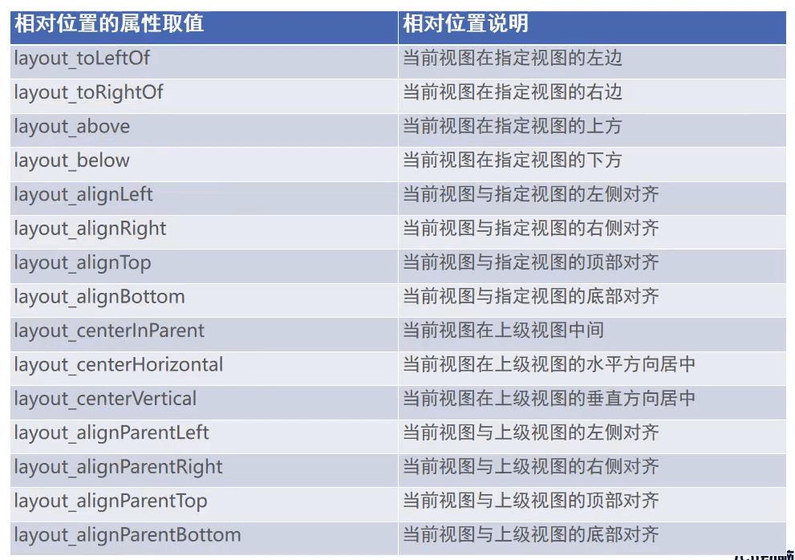
3.5 网格布局GridLayout
网格布局支持多行多列的表格排列。
网格布局默认从左往右、从上到下排列，它新增了两个属性：
- columnCount属性，它指定了网格的列数，即每行能放多少个视图；
- rowCount属性，它指定了网格的行数，即每列能放多少个视图；
4. 按钮
按钮控件Button由TextView派生而来，它们之间的区别有：
- Button拥有默认的按钮背景，而TextView默认无背景；
- Button的内部文本默认居中对齐,而TextView的内部文本默认靠左对齐;
- Button会默认将英文字母转为大写,而TextView保持原始的英文大小写;
与TextView相比, Button增加了两个新属性:
- textAllCaps属性，它指定了是否将英文字母转为大写，为true是表示自动转为大写，为false表示不做大写转换。
- onClick属性，它用来接管用户的点击动作，指定了点击按钮时要触发哪个方法;
4.1 点击事件和长按事件
监听器,意思是专门监听控件的动作行为。只有控件发生了指定的动作,监听器才会触发开关去执行对应的代码逻辑。
按钮控件有两种常用的监听器：
- 点击监听器，通过setOnClickListener方法设置。按钮被按住少于500毫秒时，会触发点击事件。
- 长按监听器,通过setOnLongClickListener方法设置。按钮被按住超过500毫秒时,会触发长按事件。
4.2 禁用与恢复按钮
在实际业务中，按钮通常拥有两种状态，即不可用状态与可用状态，它们在外观和功能上的区别如下:
- 不可用按钮：按钮不允许点击，即使点击也没反应，同时按钮文字为灰色；
- 可用按钮：按钮允许点击，点击按钮会触发点击事件，同时按钮文字为正常的黑色；
是否允许点击由enabled属性控制，属性值为true时表示允许点击，为false时表示不允许点击。
4.3 图像视图ImageView
图像视图展示的图片通常位于res/drawable***目录,设置图像视图的显示图片有两种方式：
- 在XML文件中，通过属性android:src设置图片资源，属性值格式形如“@drawable/不含扩展名的图片名称”。
- 在Java代码中,调用setlmageResource方法设置图片资源,方法参数格式形如"R.drawable.不含扩展名的图片名称”。
图像视图的缩放类型 ImageView本身默认图片居中显示,若要改变图片的显示方式,可通过scaleType属性设定，该属性的取值说明如下：
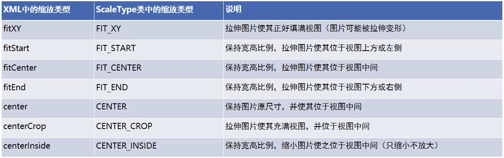
4.4 图像按钮ImageButton
ImageButton是显示图片的图像按钮,但它继承自ImageView,而非继承Button。
ImageButton和Button之间的区别有：
- Button既可显示文本也可显示图片，ImageButton只能显示图片不能显示文本。
- ImageButton上的图像可按比例缩放，而Button通过背景设置的图像会拉伸变形。
- Button只能靠背景显示一张图片,而ImageButton可分别在前景和背景显示图片,从而实现两
- 张图片叠加的效果。
ImageButton的使用场合
在某些场合，有的字符无法由输入法打出来，或者某些文字以特殊字体展示，就适合先切图再放到ImageButton。例如:开平方符号sqrt等等。
ImageButton与ImageView之间的区别有：
- ImageButton有默认的按钮背景， ImageView默认无背景。
- ImageButton默认的缩放类型为center,而ImageView默认的缩放类型为fitCenter。
4.5 同时展示文本与图像
同时展示文本与图像的可能途径包括：
(1)利用LinearLayout对ImageView和TextView组合布局。
(2)通过按钮控件Button的drawable***属性设置文本周围的图标。
- drawableTop：指定文字上方的图片。
- drawableBottom：指定文字下方的图片。
- drawableLeft：指定文字左边的图片。
- drawableRight：指定文字右边的图片。
- drawablePadding：指定图片与文字的间距。
二、Activity
1.Activity 的启动和结束
从当前页面跳到新页面，跳转代码如下：
- startActivity(new Intent(源页面.this,目标页面.class));
从当前页面回到上一个页面,相当于关闭当前页面,返回代码如下:
- finish(); //结束当前的活动页面
2.Activity的生命周期
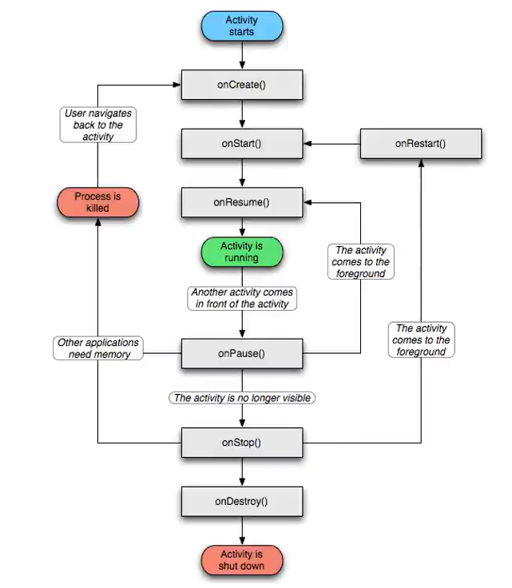
onCreate:创建活动。把页面布局加载进内存,进入了初始状态。 onStart:开始活动。把活动页面显示在屏幕上,进入了就绪状态。 onResume：恢复活动。活动页面进入活跃状态，能够与用户正常交互，例如允许响应用户的点击动作、允许用户输入文字等等。 onPause：暂停活动。页面进入暂停状态，无法与用户正常交互。 onStop：停止活动。页面将不在屏幕上显示。 onDestroy:销毁活动。回收活动占用的系统资源,把页面从内存中清除。活 onRestart:重启活动。重新加载内存中的页面数据。 onNewlntent:重用已有的活动实例。
如果一个Activity已经启动过，并且存在当前应用的Activity任务栈中，启动模式为singleTask, singlelnstance或singleTop(此时已 在任务栈顶端)，那么在此启动或回到这个Activity的时候,不会创建新的实例，也就是不会执行onCreate方法,而是执行 onNewIntent方法。
2.1 各状态之间的切换过程
打开新页面的方法调用顺序为： onCreate->onStart->onResume 关闭旧页面的方法调用顺序为： onPause->onStop->onDestroy
3.Activity 的启动模式
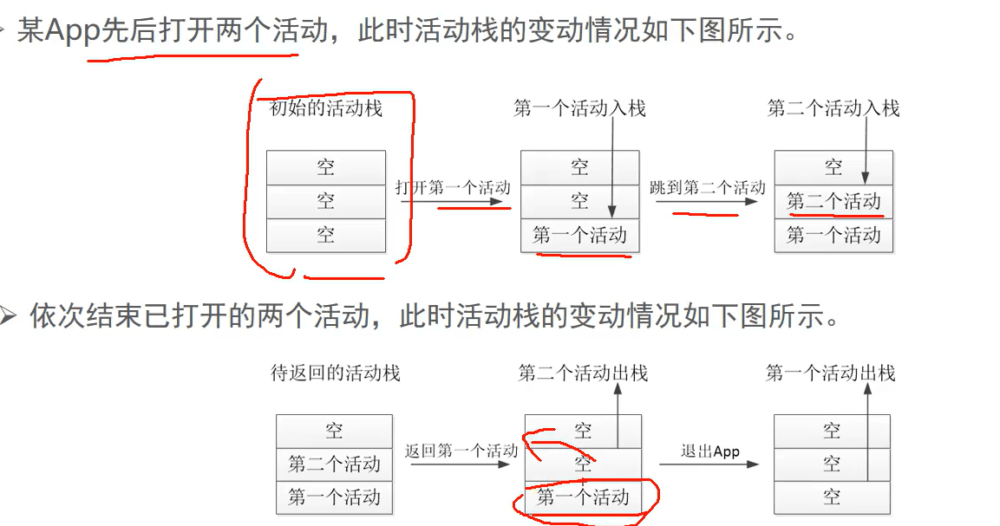
3.1 在配置文件中指定启动模式
打开AndroidManifest.xml，给activity节点添加属性android:launchMode，属性值填入standard表示采取标准模式，当然不添加属性的 话默认就是标准模式。具体的activity节点配置内容示例如下：
<activity android:name=".JumpFirstActivity" android:launchMode="standard">
launchMode属性的取值说明见下表。
| launchMode属性值 | 说明 |
|---|---|
| standard | 标准模式,无论何时启动哪个活动,都是重新创建该页面的实例并放入栈顶。如果不指定launchMode属性，则默认为标准模式 |
| singleTop | 启动新活动时,判断如果栈顶正好就是该活动的实例,则重用该实例；否则创建新的实例并放入栈顶，也就是按照standard模式处理 |
| singleTask | 启动新活动时,判断如果栈中存在该活动的实例,则重用该实例,并清除位于该实例上面的所有实例;否则按照standard模式处理 |
| singleInstance | 启动新活动时,将该活动的实例放入一个新栈中，原栈的实例列表保持不变 |
3.2 默认启动模式standard
该模式可以被设定,不在manifest设定时候, Activity的默认模式就是standard。在该模式下,启动的Activity会依照启动顺序被依次压入Task栈中: 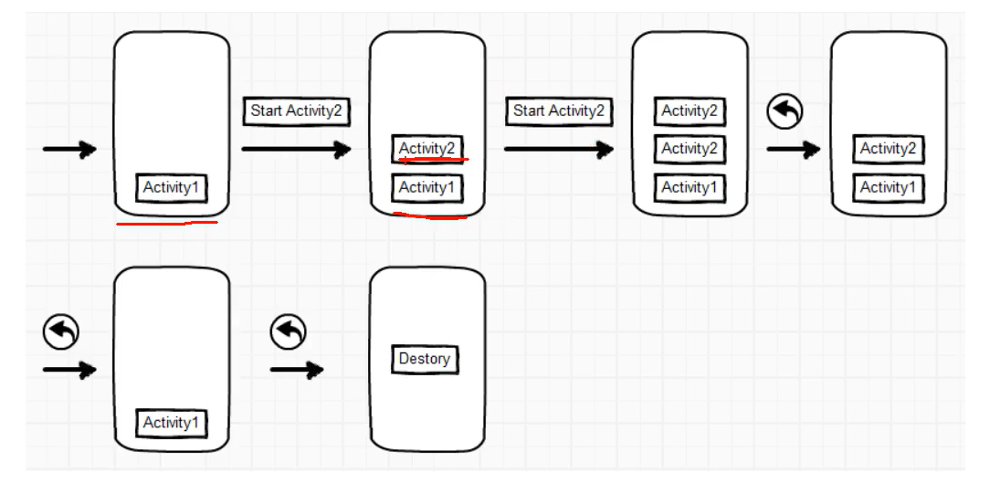
3.3 栈顶复用模式singleTop
在该模式下,如果栈顶Activity为我们要新建的Activity (目标Activity) ,那么就不会重复创建新的Activity。
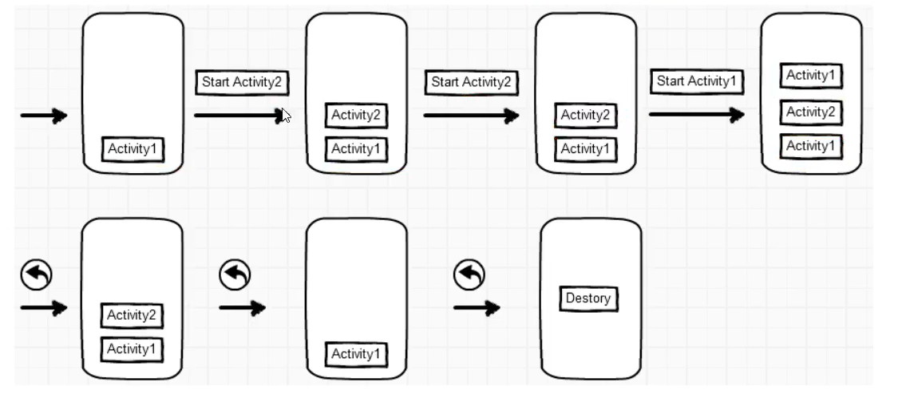
应用场景 适合开启渠道多、多应用开启调用的 Activity,通过这种设置可以避免已经创建过的Activity 被重复创建，多数通过动态设置使用。
3.4 栈内复用模式singleTask
与 singleTop 模式相似,只不过 singleTop 模式是只是针对栈顶的元素,而 singleTask 模式下,如果 task 栈内存在目标 Activity 实例, 则将 task 内的对应 Activity实例之上的所有 Activity弹出栈,并将对应 Activity 置于栈顶,获得焦点。

应用场景 程序主界面:我们肯定不希望主界面被创建多次,而且在主界面退出的时候退出整个App是最好的效果。 耗费系统资源的Activity:对于那些及其耗费系统资源的Activity,我们可以考虑将其设为singleTask模式,减少资源耗费。
3.5 全局唯一模式singlelnstance
在该模式下,我们会为目标Activity创建一个新的Task栈,将目标Activity放入新的Task,并让目标Activity获得焦点。新的Task有且只有这一个 Activity 实例。 如果已经创建过目标 Activity 实例,则不会创建新的 Task,而是将以前创建过的 Activity 唤醒。
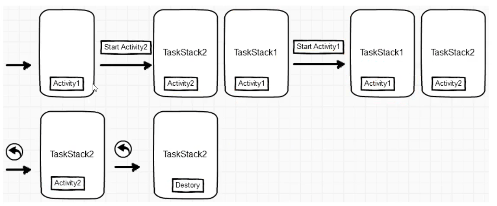
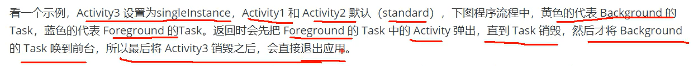
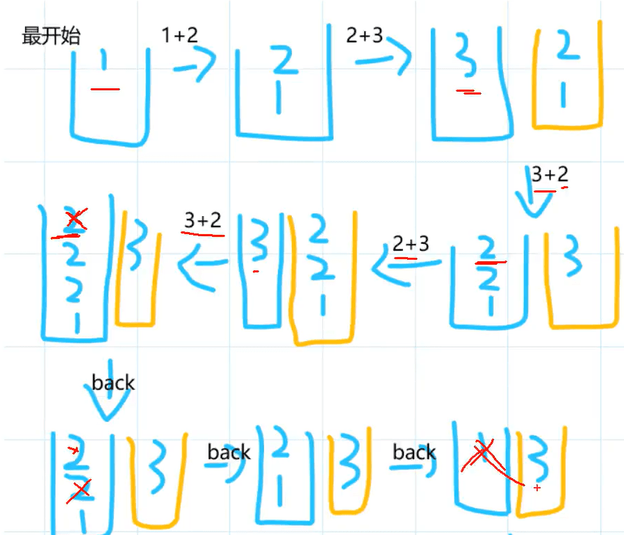
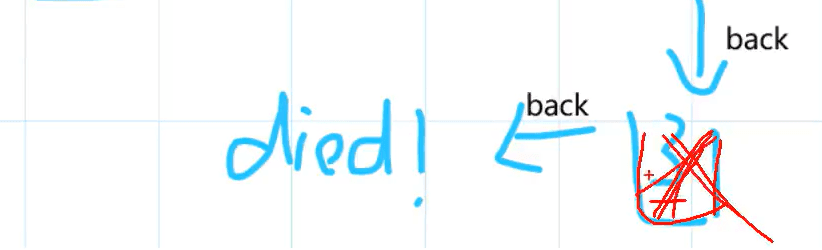
3.6 动态设置启动模式
在代码里面设置启动标志
启动标志的取值说明如下：
- Intent.FLAG_ACTIVITY_NEW_TASK:开辟一个新的任务栈
- Intent.FLAG_ACTIVITY_SINGLE_TOP:当栈顶为待跳转的活动实例之时,则重用栈顶的实例
- Intent.FLAG_ACTIVITY_CLEAR_TOP:当栈中存在待跳转的活动实例时,则重新创建一个新实例,并清除原实例上方的所有实例
- Intent.FLAG_ACTIVITY_NO_HISTORY:栈中不保存新启动的活动实例
- Intent.FLAG_ACTIVITY_CLEAR_TASK:跳转到新页面时,栈中的原有实例都被清空
3.6.1 解决重复返回的问题
在代码中设置规则
@Override
public void onClick(View v) {
// 创建一个意图对象，准备跳到指定的活动页面
Intent intent = new Intent(this, JumpSecondActivity.class);
// 栈中存在待跳转的活动实例时，则重新创建该活动的实例，并清除原实例上方的所有实例
intent.setFlags(Intent.FLAG_ACTIVITY_CLEAR_TOP);
startActivity(intent);
}
3.6.2 登录成功之后不再返回登录页面
@Override
public void onClick(View v) {
// 创建一个意图对象，准备跳到指定的活动页面
Intent intent = new Intent(this, LoginSuccessActivity.class);
// 设置启动标志：跳转到新页面时,栈中的原有实例都被清空,同时开辟新任务的活动栈
intent.setFlags(Intent.FLAG_ACTIVITY_CLEAR_TASK | Intent.FLAG_ACTIVITY_NEW_TASK);
startActivity(intent);
}
3.7 显式Intent和隐式Intent
Intent是各个组件之间信息沟通的桥梁,它用于Android各组件之间的通信,主要完成下列工作：
- 标明本次通信请求从哪里来、到哪里去、要怎么走。
- 发起方携带本次通信需要的数据内容，接收方从收到的意图中解析数据。
- 发起方若想判断接收方的处理结果，意图就要负责让接收方传回应答的数据内容。
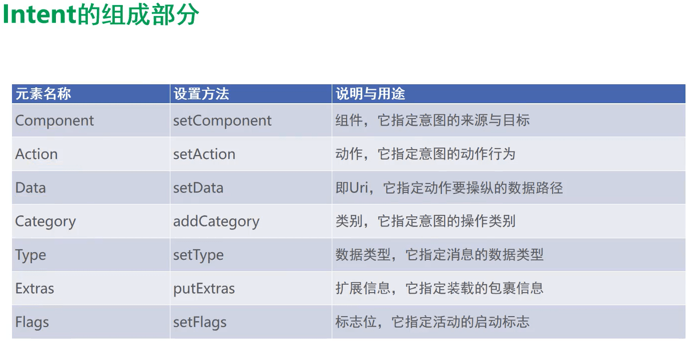
3.7.1 显示Intent
显式Intent，直接指定来源活动与目标活动,属于精确匹配。它有三种构建方式：
- 在Intent的构造函数中指定。
- 调用意图对象的setClass方法指定。
- 调用意图对象的setComponent方法指定。
@Override
public void onClick(View v) {
// 1.在Intent的构造函数中指定
Intent intent = new Intent(this, ActFinishActivity.class);
// 2.调用意图对象的setClass方法指定
// intent.setClass(this, ActFinishActivity.class);
// 3.调用意图对象的setComponent方法指定
ComponentName component = new ComponentName(this, ActFinishActivity.class);
intent.setComponent(component);
startActivity(intent);
}
3.7.2 隐式Intent
没有明确指定要跳转的目标活动，只给出一个动作字符串让系统自动匹配，属于模糊匹配
通常App不希望向外部暴露活动名称，只给出一个事先定义好的标记串，这样大家约定俗成、按图索骥就好，隐式Intent便起到了标记过滤作用。这个动作名称标记串，可以是自己定义的动作，也可以是已有的系统动作.
@Override
public void onClick(View v) {
String phone = "123456";
Intent intent = new Intent();
switch (v.getId()) {
case R.id.btn_dial:
// 设置意图动作为准备拨号
intent.setAction(Intent.ACTION_DIAL);
// 声明一个拨号的Uri
Uri uri = Uri.parse("tel:" + phone);
intent.setData(uri);
break;
case R.id.btn_sms:
intent.setAction(Intent.ACTION_SENDTO);
Uri uri2 = Uri.parse("smsto:" + phone);
intent.setData(uri2);
break;
case R.id.btn_my:
intent.setAction("android.intent.action.NING");
intent.addCategory(Intent.CATEGORY_DEFAULT);
break;
}
startActivity(intent);
}
想要跳转到自己定义的不同模块的Activity
- 在目标的 AndroidManifest.xml 中添加
<activity
android:name=".CalculatorActivity"
android:exported="true"> <!--必须设置为true-->
<intent-filter>
<action android:name="android.intent.action.MAIN" />
<category android:name="android.intent.category.LAUNCHER" />
</intent-filter>
<!--自行添加-->
<intent-filter>
<action android:name="android.intent.action.NING" />
<category android:name="android.intent.category.DEFAULT" />
</intent-filter>
</activity>
- 在java代码中设置action与category
//与上面自行添加的一样
intent.setAction("android.intent.action.NING");
intent.addCategory(Intent.CATEGORY_DEFAULT);
3.8 向下一个Activity发送数据
Intent使用Bundle对象存放待传递的数据信息。 Bundle对象操作各类型数据的读写方法说明见下表。
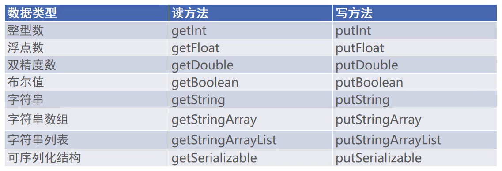
//发送放
@Override
public void onClick(View v) {
Intent intent = new Intent(this, ActReceiveActivity.class);
// 创建一个新包裹
Bundle bundle = new Bundle();
bundle.putString("request_time", DateUtil.getNowTime());
bundle.putString("request_content", tv.getText().toString());
intent.putExtras(bundle);
// intent.putExtra("request_time", DateUtil.getNowTime());
// intent.putExtra("request_content", tv.getText().toString());
startActivity(intent);
}
//接收方
@Override
protected void onCreate(Bundle savedInstanceState) {
super.onCreate(savedInstanceState);
setContentView(R.layout.activity_act_receive);
TextView tv = (TextView) findViewById(R.id.tv_receive);
// 从上一个页面传来的意图中获取快递包裹
Bundle bundle = getIntent().getExtras();
String requestTime = bundle.getString("request_time");
String requestContent = bundle.getString("request_content");
String desc = String.format("收到请求消息: \n请求时间为%s\n请求内容为%s", requestTime, requestContent);
tv.setText(desc);
}
3.9 向上一个Activity返回数据
处理下一个页面的应答数据，详细步骤说明如下(已过时)：
- 上一个页面打包好请求数据,调用startActivityForResult方法执行跳转动作
- 下一个页面接收并解析请求数据,进行相应处理
- 下一个页面在返回上一个页面时，打包应答数据并调用setResult方法返回数据包裹
- 上一个页面重写方法onActivityResult,解析获得下一个页面的返回数据
新版处理方式：
//发送方
//调用新方法处理
ActivityResultLauncher<Intent> register = egisterForActivityResult(new ActivityResultContracts.StartActivityForResult(), result -> {
});
@Override
public void onClick(View v) {
Intent intent = new Intent(this, ActResponseActivity.class);
intent.putExtra("request_time", DateUtil.getNowTime());
intent.putExtra("request_content", mRequest);
register.launch(intent);
}
// 接收方照常接收
// 从上一个页面传来的意图中获取快递包裹
Bundle bundle = getIntent().getExtras();
String requestTime = bundle.getString("request_time");
String requestContent = bundle.getString("request_content");
String desc = String.format("收到请求消息: \n请求时间为%s\n请求内容为%s", requestTime, requestContent);
tvRequest.setText(desc);
// 但发送时有所不同
@Override
public void onClick(View v) {
Intent intent = new Intent();
intent.putExtra("response_time", DateUtil.getNowTime());
intent.putExtra("response_content", mResponse);
// 携带意图返回上一个页面。RESULT_OK表示处理成功
setResult(Activity.RESULT_OK, intent);
// 结束当前页面
finish();
}
//发送方再接收接收方传来的数据
register = registerForActivityResult(new ActivityResultContracts.StartActivityForResult(), result -> {
// 收到上一个Activity传给当前Activity的结果
if (result != null) {
Intent intent = result.getData(); // 注意这里的intent是从result中拿取
if (intent != null && result.getResultCode() == Activity.RESULT_OK) {
Bundle bundle = intent.getExtras();
String responseTime = bundle.getString("response_time");
String responseContent = bundle.getString("response_content");
String desc = String.format("收到返回消息: \n应答时间为%s\n应答内容为%s", responseTime, responseContent);
tvResponse.setText(desc);
}
}
});
3.10 在代码中读取资源配置文件的内容
@Override
protected void onCreate(Bundle savedInstanceState) {
super.onCreate(savedInstanceState);
setContentView(R.layout.activity_read_string);
tvResource = (TextView) findViewById(R.id.tv_resource);
// 从strings.xml获取名叫weather_str的字符串值
String value = getString(R.string.weather_str); // getString是Context类中的方法，而Activity是继承与Context的，所以直接调用
tvResource.setText(value);
}
3.11 在代码中获取元数据(AndroidManifest.xml中的)
在Java代码中，获取元数据信息的步骤分为下列三步：
- 调用getPackageManager方法获得当前应用的包管理器;
- 调用包管理器的getActivitylnfo方法获得当前活动的信息对象;
- 活动信息对象的metaData是Bundle包裹类型，调用包裹对象的getString即可获得指定名称的参数值；
在AndroidManifest.xml中添加
<activity
android:name=".MetaDataActivity"
android:exported="true">
<intent-filter>
<action android:name="android.intent.action.MAIN" />
<category android:name="android.intent.category.LAUNCHER" />
</intent-filter>
<!--value也可以引用strings.xml中的-->
<meta-data android:name="weather" android:value="晴天"/>
</activity>
@Override
protected void onCreate(Bundle savedInstanceState) {
super.onCreate(savedInstanceState);
setContentView(R.layout.activity_meta_data);
TextView tvMeta = findViewById(R.id.tv_meta);
// 获取包管理器
PackageManager packageManager = getPackageManager(); // Context中的
try {
// getComponentName()获取Activity的组件名称 android:name=".MetaDataActivity"
// 从应用包管理器中获取当前的活动信息
ActivityInfo info = packageManager.getActivityInfo(getComponentName(), PackageManager.GET_META_DATA);
Bundle bundle = info.metaData;
String weather = bundle.getString("weather");
tvMeta.setText(weather);
} catch (PackageManager.NameNotFoundException e) {
throw new RuntimeException(e);
}
}
3.12 给应用页面注册快捷方式
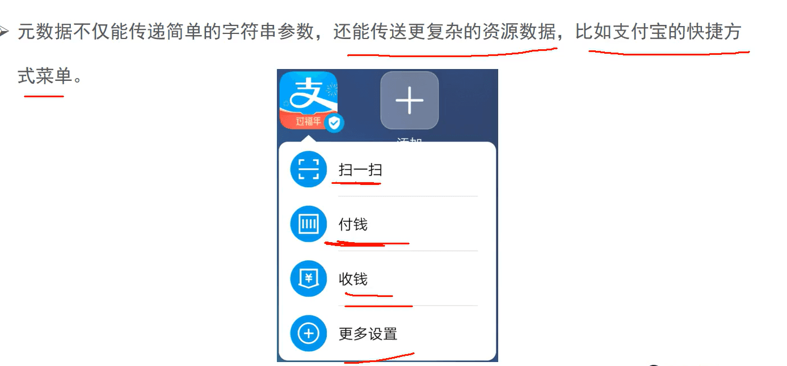
- 定义一个value的xml文件，并用shortcut标签，将要显示的内容放在里面(注意：ShortLabel、LongLabel必须是在strings.xml中的)
<?xml version="1.0" encoding="utf-8"?>
<shortcuts xmlns:android="http://schemas.android.com/apk/res/android">
<shortcut
android:shortcutId="first"
android:enabled="true"
android:icon="@mipmap/ic_launcher"
android:shortcutShortLabel="@string/first_short"
android:shortcutLongLabel="@string/first_long">
<intent
android:action="android.intent.action.VIEW"
android:targetPackage="com.example.chapter04"
android:targetClass="com.example.chapter04.ActStartActivity" />
<categories android:name="android.shortcut.conversation" />
</shortcut>
<shortcut
android:enabled="true"
android:icon="@mipmap/ic_launcher"
android:shortcutId="second"
android:shortcutLongLabel="@string/second_long"
android:shortcutShortLabel="@string/second_short">
<intent
android:action="android.intent.action.VIEW"
android:targetPackage="com.example.chapter04"
android:targetClass="com.example.chapter04.JumpFirstActivity" />
<categories android:name="android.shortcut.conversation" />
<categories android:name="android.shortcut.conversation" />
</shortcut>
<shortcut
android:enabled="true"
android:icon="@mipmap/ic_launcher"
android:shortcutId="third"
android:shortcutLongLabel="@string/third_long"
android:shortcutShortLabel="@string/third_short">
<intent
android:action="android.intent.action.VIEW"
android:targetPackage="com.example.chapter04"
android:targetClass="com.example.chapter04.LoginInputActivity" />
<categories android:name="android.shortcut.conversation" />
<categories android:name="android.shortcut.conversation" />
</shortcut>
</shortcuts>
- 在AndroidManifest.xml写入对应的Activity，并且设置exported="true"
<activity
android:name=".JumpFirstActivity"
android:exported="true" />
<activity
android:name=".LoginInputActivity"
android:exported="true" />
<activity
android:name=".ActStartActivity"
android:exported="true">
<intent-filter>
<action android:name="android.intent.action.MAIN" />
<category android:name="android.intent.category.LAUNCHER" />
</intent-filter>
<!--设置使用shortcuts-->
<meta-data
android:name="android.app.shortcuts"
android:resource="@xml/shortcuts" />
</activity>